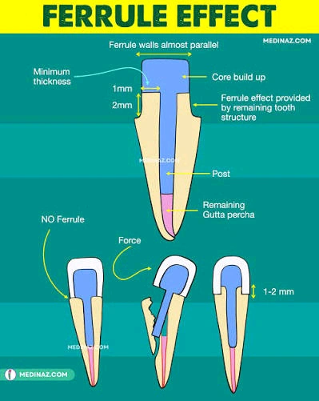
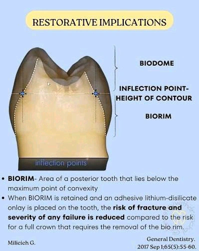
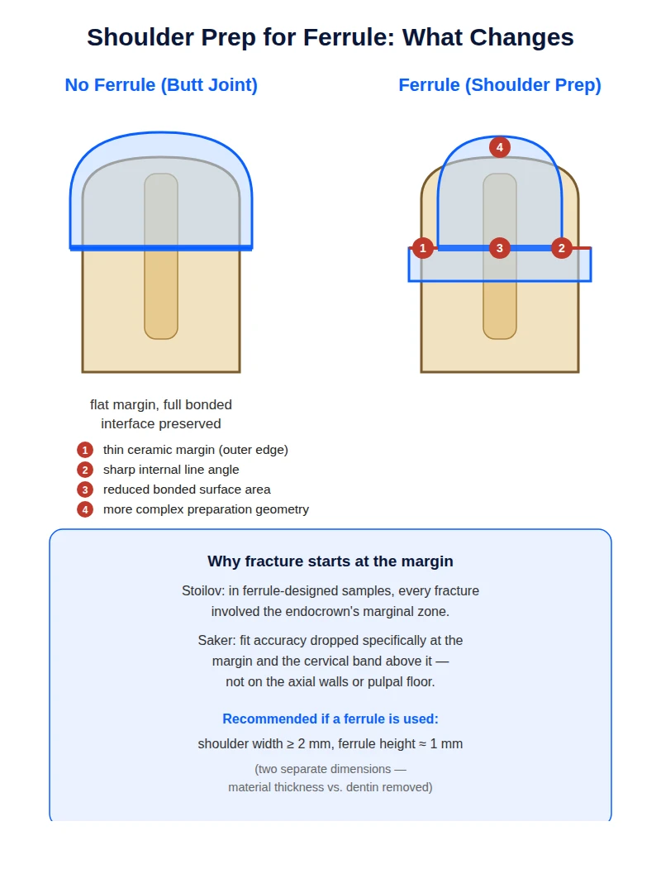
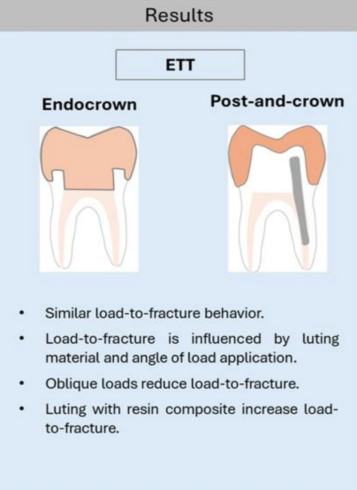
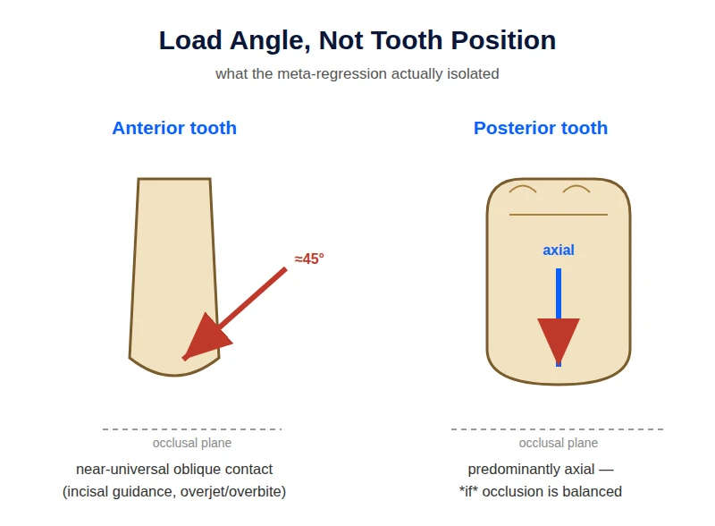
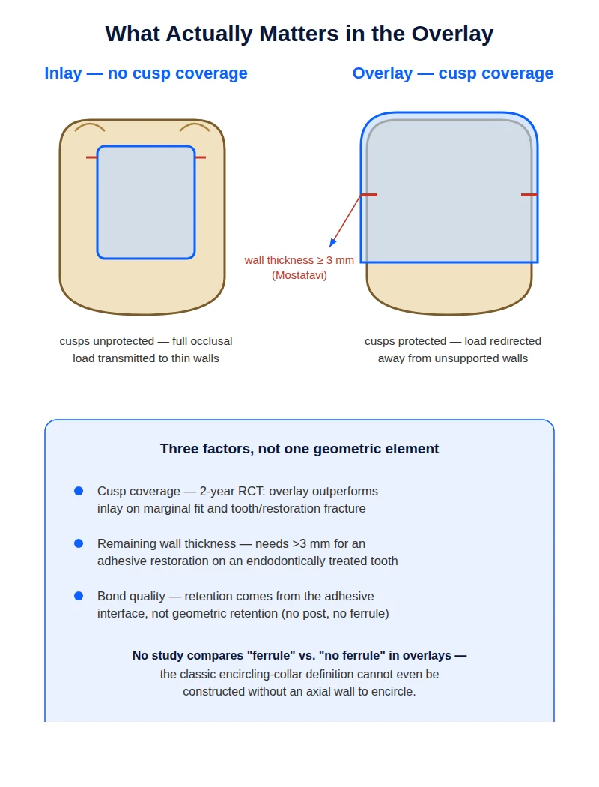

Ferrule in Bonded Restorations: One Word, Three Different Concepts
An endodontically treated molar. The buccal and lingual walls are sound but their height is limited. Both marginal ridges are gone, and you have decided on an indirect bonded restoration with cuspal coverage.
The question is: to have a ferrule, should you cut into that same sound cervical wall and create a shoulder, or hold back and rely on the bond?
On the surface this looks like a preparation decision. In reality it is a conceptual question, and it cannot be answered until it is clear what "ferrule" actually refers to in this context.
∆ 2. What ferrule actually is
In the classic definition, ferrule means a band of sound dentin encircling the tooth, roughly 1.5–2 mm in height and about 1 mm thick, over which the restoration's axial walls are seated.
Its mechanism is bracing. The restoration sits over this dentin collar, resists the tooth flexing under load, and turns the tooth and restoration into one mechanical unit. The classic principle is that the ferrule must fully encircle sound tooth structure with parallel axial walls.
Hold on to three points from this definition, because the rest of the article turns on them.
1. Ferrule depends on an encircling axial wall in the restoration.
2. Its mechanism is described for resisting leverage and lateral force, not axial compressive load.
3. Nearly all the studies that confirm a positive ferrule effect were done in the context of post-and-core with a full crown.

∆ 3. The article's thesis
Ferrule is not a preparation feature. It is a concept tied to the retention mechanism.
When a restoration's retention shifts from macromechanical to adhesive, the term "ferrule" travels with it, but the mechanism that term originally described does not necessarily travel with it. The result is that in today's endocrown and overlay literature, the word ferrule can carry three entirely different meanings, and it is usually not clear which one is intended.
∆ 4. Three concepts now called ferrule
| Concept | Where it is seen | Does it provide bracing? |
|---|---|---|
| A. The encircling dentin collar | The classic definition, in post-and-core with a full crown | Yes. This is the original mechanism |
| B. Finish-line geometry | Most endocrown studies (shoulder or chamfer versus butt joint) | Not necessarily. It is a margin geometry |
| C. A marker of remaining structure | Clinical studies; restoration of the endodontically treated tooth | Not applicable. It is not a preparation decision at all |
A. The encircling dentin collar. The original meaning. The same sound dentin collar over which the restoration's axial walls are seated, preventing the tooth from flexing.
B. Finish-line geometry. This is what constitutes the "ferrule group" in most endocrown studies. That is, a shoulder or chamfer instead of a butt joint.
In the Saker study, the ferrule group means a 1 mm circumferential shoulder versus a butt joint. In Stoilov, it means a 2 mm shoulder versus a 90-degree butt joint. In Bamajboor and Dudley too, the ferrule group means an additional axial reduction with a shoulder finish line (based on the abstract).
This is a margin geometry, not necessarily a bracing element. The distinction matters: the short axial wall cut for a shoulder is not the same encircling dentin collar as the classic definition.
C. A marker of how much structure remains, not a preparation decision. In some clinical studies, when the authors write that "these teeth had ferrule," they do not mean the dentist deliberately prepared a ferrule. They mean that after decay and endodontic treatment, a sufficient collar of sound dentin naturally remained around the tooth.
In this usage, ferrule sits alongside two other criteria: the number of axial walls still standing, and the percentage of coronal structure lost. All three together indicate only one thing — how damaged the tooth is, not which preparation design was chosen.
Why does this distinction matter? Because when a paper says ferrule increased resistance, without reading the methods you don't know which of these three concepts it actually measured: a real dentin collar, a margin geometry, or simply a marker of tooth health. This ambiguity is a major source of the contradictions in the data.
The Fraga review records exactly this as a limitation of the field: many papers never even reported what height and thickness their ferrule had, or what type of finish line they used.
∆ 5. Bio-Rim: a concept defined in the opposite direction

First a correction, because this concept is often misunderstood. Bio-Rim has nothing to do with the distance from the restoration's margin to the gingiva. That definition gets confused with biologic width, which is a completely different concept.
Bio-Rim means the cervical half of the tooth itself: from below the height of contour — that is, below the contact area with the adjacent tooth — down to the CEJ. This is the tooth's own structure, not the space between the restoration and the gingiva.
Its logic comes from the compression-dome model. In this model the tooth behaves like the dome of a building: the crown plays the role of the dome, and the cervical half plays the role of the walls the dome rests on. The upper half is called the Bio-Dome and the cervical half the Bio-Rim.
Why does this area matter? Because the tooth's greatest tensile stress concentrates exactly here. As long as this area is intact and its enamel rim is sound, it withstands tensile stress and the underlying dentin stays in a compressive, protected state. Remove it, and you expose that dentin to a force its structure was never designed to bear.
The point relevant to our discussion: a classic crown preparation removes exactly this area. An overlay preparation preserves it. The explicit recommendation of the source that introduced this concept is likewise to preserve the Bio-Rim as much as possible.
So the difference between Bio-Rim and ferrule is one of direction, not anatomical location. Both refer to the same cervical area, but ferrule is built (by cutting, defined from the restoration's side, to resist lateral force), while Bio-Rim is preserved (by not cutting, defined from the tooth's own side, to reduce deformation). One is something you add; the other is something you leave alone.
A caveat about the level of evidence required here. Bio-Rim and the compression-dome model are a conceptual framework built mainly on mechanical reasoning and computer models. In the search conducted for this article, no clinical study was found that directly and in a controlled way tested preserving the Bio-Rim. This framework is useful for preparation decisions, but it should not be cited with the same certainty as ferrule. Ferrule itself, as you'll see in section 7, does not have decisive evidence in this domain either.
∆ 6. The tension between the two, and why it should not be turned into a rule
The hypothesis is simple: to build a shoulder you must cut into the cervical wall, so you spend part of the Bio-Rim.
What's interesting is that this argument emerges from the papers themselves, even where the term Bio-Rim is never used. Saker and colleagues, explaining why the no-ferrule group was stronger in their study, write that when you cut a shoulder for the ferrule, the flat, broad surface that directly receives occlusal load becomes smaller, because part of it was spent building the shoulder. Less surface means weaker distribution of vertical force, and that lowers resistance.
But this should not be taken as definitive causation. Cutting a shoulder simultaneously changes several things at once.
1. Part of the cervical structure is removed.
2. A thin ceramic edge is created at the margin, which is weak at low thickness and under tensile stress.
3. A sharp additional internal angle is created, which can become a stress-concentration point.
4. The preparation geometry becomes more complex.

Stoilov's observation reinforces the second interpretation. In the ferrule specimens, wherever fracture occurred, the endocrown's marginal area was always involved, unlike the classic design. That is, the thin edge itself had become the weak point. For this reason the authors recommend that if you do place a ferrule, make the shoulder at least 2 mm wide so the ceramic has sufficient thickness at the margin.
The fourth point also has direct evidence, and the details are more interesting than the finding itself. In the Saker study, the ferrule design (1 mm shoulder) showed greater misfit relative to the tooth than the no-ferrule design (butt joint). But this worsened fit was not distributed evenly across the whole restoration. The significant difference appeared only in two areas: the restoration margin itself, and the cervical band immediately above it. On the axial walls and the pulpal floor, the ferrule and butt-joint designs did not differ significantly.
This localization matters. If the fit degradation had been spread across the whole internal surface, it could be attributed to general factors like material type or the scanning process. But when it worsens exactly where the additional cutting was done and the geometry became more complex, the interpretation is clearer: the extra angle you create for the shoulder is exactly the spot that becomes harder for the scanner and the milling machine to reproduce.
The bad luck is that this is precisely the most sensitive area. Misfit at the pulpal floor is mainly a mechanical issue, but misfit at the margin and cervical area is exactly where marginal seal, microleakage, and secondary caries are determined. In that study all these values still stayed within a clinically acceptable range, but the direction of the trend is clear. The Mostafavi review reaches the same conclusion: any feature you add to the preparation increases marginal discrepancy.
Putting these four observations together, a defensible hypothesis takes shape that could be called the ferrule–Bio-Rim trade-off: the more you cut to build a ferrule, the more you subtract from the Bio-Rim by the same amount, and this reduction may cancel out part of the ferrule's mechanical benefit.
We should be explicit that this hypothesis has not been tested. In what we reviewed, no study was found that directly and in a controlled way tested this trade-off. What we have is an inference from several separate studies, not direct evidence.
∆ 7. What the endocrown data actually say
| Study | What it measured | Load angle | Result on ferrule |
|---|---|---|---|
| Einhorn (2019) | Force required to fracture (abstract only) | Oblique | Positive in absolute force. But once force was divided by bonded surface area, the difference disappeared. |
| Stoilov (2024) | Durability under repeated chewing cycles | Oblique | Neutral. No significant difference in survival. Early failures occurred only in the no-ferrule group. |
| Saker (2024) | Force required to fracture + misfit | Axial | Negative. The no-ferrule group was stronger in every condition and showed less misfit. |
| Fraga (2025) | Meta-regression of 25 studies; force required to fracture | Variable (0-60 degrees) | No effect. Ferrule was not significant. Cement type and load angle were determinative. |
Einhorn (2019), the reference paper cited in favor of ferrule. The full text was not accessible, so what follows here is based only on the abstract.
On mandibular molars, preparations with and without ferrule were compared. The result is reported in two forms, and that itself is interesting.
If you ask how much force was needed to fracture the restoration, the no-ferrule group failed sooner. But if you divide that same force by the surface area the restoration was bonded to, the difference between groups disappears. In both cases, most fractures were catastrophic.
Why does this matter? Because cutting a ferrule automatically enlarges the bonded surface area. So part of the ferrule group's apparent advantage may simply come down to that, not to the ferrule preventing the tooth from flexing. Put simply, ferrule here may have functioned not as a protective collar but simply as additional bonding surface.
We should be explicit that this is a reading, not the paper's own conclusion. Since only the abstract was accessible, we don't know how the authors themselves interpreted this difference. Keep this as a clue, not decisive evidence.
Stoilov (2024), the only study that actually measured durability. This study compared zirconia endocrowns with and without a 2 mm ferrule, but with one important difference: instead of ramping up force once until the specimen fractured, it applied thousands of simulated chewing cycles and raised the load step by step. This is closer to actual oral behavior.
Main result: most specimens passed the entire test, and no significant difference in survival was seen between the ferrule and no-ferrule groups. Cement type made no difference either.
But two points are interesting. First, early failures — the ones that occurred at lower forces — happened only in the no-ferrule groups. Second, wherever the ferrule group did fail, the fracture started from the margin area.
The authors themselves caution that because the number of failures was low, "no significant difference" cannot be read as "no difference exists." It simply means the sample size does not allow a definitive judgment.
Saker (2024), the reverse result. This study compared endocrowns with a 1 mm shoulder against a butt-joint design and got the opposite result: the no-ferrule groups had higher resistance in every condition.
But the key limitation is stated by the authors themselves: force was applied only vertically, along the tooth's long axis, with no angulation at all. And in that same discussion they state explicitly that ferrule's known benefit in the literature concerns oblique and lateral forces, not axial force.
That is, by its own admission, this study tested a scenario in which ferrule's claimed mechanism never comes into play. It measures the cost of the extra cutting without giving much chance for its benefit to show up.
Mostafavi systematic review (2022). This review pooled laboratory studies on endocrown preparation design. The first point is that it could not numerically combine the results, because the preparation designs and evaluation methods differed too much to be pooled. That itself is a finding.
The picture that emerges from the studies is scattered. One study found a shoulder better than a butt joint, but the fracture pattern was the same in both. Another study saw no difference between a shoulder and a deep chamfer. A third showed the butt joint had less microleakage.
The review's own final recommendation is clear: given the available evidence, and to preserve tooth structure, a butt joint is preferred as a simple and efficient margin design.
Fraga meta-regression (2025). First, an explanation of the method itself, since it is less familiar. An ordinary systematic review lays each study's result side by side and says some agreed and some disagreed. The problem is that these studies differ in dozens of things: cement type, load angle, material, tooth type. So when results conflict, it isn't clear which variable is to blame.
Meta-regression solves this. It enters all the studies into a single statistical model and asks: holding the other variables constant, how much does each variable contribute on its own to the outcome? This way you can tell which factors are actually determinative and which are just noise. This method is far stronger than eyeballing the comparison of results.

The result. First, an important note about this study's scope: Fraga did not review bonded restorations alone. It included studies that compared endocrowns to post-and-crown, meaning both restoration types sit together in one model. The ferrule variable was coded in both groups too. So when we say ferrule had no significant effect, that result comes from a pool that includes both endocrowns and post-and-crowns.
The model was able to explain a large share of the variance between studies. The outcome measure in all these studies was one thing: the force required to fracture the specimen.
Three things had no significant effect on this force: the presence of ferrule, restoration type (endocrown versus post-and-crown), and tooth type (anterior or posterior).
Two things had a clear effect: cement type and load angle. Cementing with resin composite significantly raised resistance. And the more the load shifted from axial toward oblique, the more resistance dropped sharply — and the wider the angle, the bigger the drop.
Clinical summary: when you analyze all the data together and correctly, what actually changes a restoration's fate is cement type and the occlusal force vector, not the presence or absence of ferrule.
The authors themselves know this result runs against conventional belief, and they address it: an older meta-analysis on post-and-core showed a positive ferrule effect, but that study also had very high heterogeneity between its papers, and the positive effect was only seen in premolars; in molars and anterior teeth there was no difference.
∆ 8. Load angle, not the anterior/posterior split
At first glance it seems the contradiction in section 7 could be resolved with a simple split: "ferrule is needed anteriorly, not posteriorly." But Fraga's meta-regression, which also included anterior studies, showed tooth type had no significant effect. Instead, load angle was the single strongest factor.
Here we need to be careful, because these two findings are not as different as they seem.
If you look at that same study's supplementary tables, you see something interesting. Every one of the eight anterior studies, without exception, applied force at a 45-degree angle. The posterior studies, however, span a full range, from purely axial to 60 degrees. That is, in this dataset, "being anterior" and "oblique load" nearly overlap.

Now think about what the statistical model sees. Almost everywhere it says "anterior," it also says "45 degrees" right beside it. When two things are this entangled, the model cannot separate their individual contributions. It picks angle, because it is numeric and graded and directly tied to mechanics. Nothing is left for tooth type to explain.
So "tooth type was not significant" should be read this way: once you know the load angle, knowing whether the tooth is anterior or posterior tells you nothing new. That is not the same as saying "anterior and posterior teeth behave the same way."
And here is the clinical point. In a lab, you can load a central incisor purely axially and hold it there. In the mouth you have no such control. A central incisor biting straight down on the incisal edge can receive a relatively axial load, but the moment the patient enters excursive movements or bites normally within a typical overjet and overbite, the vector shifts toward oblique. That is, in anterior teeth, oblique load is neither guaranteed nor constant, but it is far more likely than in a molar with balanced occlusion.
This also resolves the apparent contradiction between two studies. A review of anterior endocrowns in the British Dental Journal reports that a 2 mm ferrule significantly improves the performance and prognosis of anterior endocrowns (based on the abstract). Fraga says tooth type doesn't matter. Both can be true: an anterior tooth is probably not special because it is anterior, but because of the load vector that most often lands on it. The underlying mechanism is the same in both.
The practical takeaway is that instead of asking "is the tooth anterior or posterior," it is better to ask how far the force vector landing on this tooth deviates from its long axis. A central incisor gets an oblique load most of the time. A molar with balanced occlusion mostly gets axial load. But that same molar, in a bruxer or with excursive interference, moves closer to an anterior-like situation. That is where the decision changes, not in the tooth number.
So the more coherent picture is this:
Under axial load, ferrule is a pure cost. You cut something and gain nothing.
Under oblique load, it may offset that cost, but even there, in the only study that actually measured durability, it did not significantly improve restoration survival.
We need to clear up a misunderstanding here, because it matters. None of this means ferrule is useless in general. In the setting where ferrule was born — post-and-core with a full crown — its role is well established, and this article does not call that into question. When you have a post inside the root, any lateral force creates a lever that tries to rotate the post within the dentin. The dentin collar the crown wraps around exactly restrains that lever. There the mechanism is clear and it makes sense.
This article's argument is only about transferring that concept to bonded restorations. In endocrowns and overlays there is no post whose leverage needs restraining, and the restoration's retention comes from the bond, not from wall friction. So the mechanism that justified ferrule in post-and-core loses its relevance here. The right question is not "does ferrule work," but "in the absence of a post and in the presence of a bond, does it still do the same job."
One subtle point remains. Even in post-and-core, the evidence is not as uniform as conventional belief suggests. The same meta-analysis Fraga cites found a positive ferrule effect only in premolars, and saw no significant difference in molars and anterior teeth. That is, even in the classic setting, ferrule is not a universal rule.
∆ 9. And now the overlay
In the overlay literature, ferrule has been neither rejected nor confirmed. It simply has never been operationalized.
In the search conducted for this article, no study was found that placed a ferrule overlay group against a no-ferrule overlay group. The structural reason is clear: the overlay has no encircling axial wall, so the classic definition of ferrule cannot even be constructed on it. If such a study exists somewhere, whatever it calls ferrule is most likely the margin geometry, not the encircled dentin collar.
So what actually determines outcome in the overlay?
Cuspal coverage. The evidence here is relatively solid. A two-year clinical trial on endodontically treated teeth with MOD cavities showed that the overlay — the design that covers the cusps — outperforms the inlay in marginal fit and in tooth and restoration fracture (based on the abstract).

Volume and configuration of remaining structure. A terminology note is needed here, because two different metrics get confused. "Surface" refers to the tooth's classic surfaces — mesial, distal, buccal, lingual, and occlusal — which total five on a posterior tooth. "Wall" is something else and refers to the remaining axial walls of the cavity. So when a study talks about "loss of four to five surfaces," it does not mean the tooth had four or five walls; it means the destruction has taken nearly the whole crown.
With this definition, a systematic review on this topic shows that teeth that have lost one to three surfaces and still have their axial walls intact do well with a direct bonded restoration. But teeth that have lost four or five surfaces, or whose peripheral dentin collar is no longer continuous, benefit from cuspal coverage (based on the abstract). Note that ferrule here appears in the same sense "C" from section 4 — a marker of how much structure remains.
Thickness of the remaining wall. The Mostafavi review notes that an endodontically treated tooth needs walls thicker than 3 mm for an adhesive restoration. That is, the real question in the overlay is not "ferrule, yes or no," but "is this wall thick enough, or does it need to be covered."
Minimal geometric retention. A less-discussed point: a study cited in the Mostafavi review compared a flat overlay with no intra-chamber extension at all against deeper endocrowns and a classic crown. The endocrowns performed as well as the classic crown, but the authors did not recommend a flat overlay held only by bonding with no geometric retention at all. Another study likewise showed an overlay with no extension has lower resistance than an endocrown, though the difference did not reach significance.
Summary of this section: in the overlay, what takes the place of ferrule is not a single geometric element. It is the combination of cuspal coverage, wall thickness, and bond quality.
∆ 10. What actually kills overlays and endocrowns
Nearly all the data in section 7 come from one type of test: force is raised gradually until the specimen fractures. This measures instantaneous capacity, not durability over time. Three reasons this distinction matters to you.
The numbers from these tests exceed real oral conditions. The fracture resistance reported in these studies, with or without ferrule, is above the range of normal chewing force. The Mostafavi review explicitly concludes that once both designs cross this threshold, extra cutting has no justification just to push the resistance number higher. Stoilov also explains why this type of test is insufficient: ceramic is brittle, and in the mouth it does not fracture from a single large blow but from the accumulation of micro-cracks over months and years.
The failure pattern matters more than the resistance number. In Saker, the most common pattern across all groups was fracture below the CEJ that was not repairable, and it got worse the deeper the extension went. The Mostafavi review reaches the same conclusion. That is, an endocrown may give a good resistance number but still take the tooth down with it when it fails.
The tooth's fate depends on remaining dentin, not on the preparation design. In Stoilov, most fractures were repairable, and the authors attribute this to the conservative preparation and the absence of a post. The more dentin you preserve, the higher the chance you can save the tooth after a restoration failure.
One last point: in the endocrown literature, loss of retention is one of the most common real-world complications, and none of these fracture tests measure it.
∆ 11. Summary for practical treatment
Back to the molar from the opening.
| Tooth condition | Decision | Why |
|---|---|---|
| Cervical wall sound, adequate height | Do not cut extra structure, butt joint | Do not destroy sound structure to build something whose benefit is unproven |
| Remaining dentin thickness thin | Do not cut a ferrule | Cutting a ferrule only weakens a tooth that is already weak |
| Adequate peripheral structure + significant lateral occlusal force | A ferrule design is defensible | The bracing mechanism only matters under oblique load; wide shoulder, low height |
| Destruction below the CEJ | Conventional crown with post-and-core | You have left the scope of a bonded restoration |
If your cervical wall is sound and of adequate height, the whole dilemma is moot. No data justify extra cutting to build a ferrule. The systematic review's explicit recommendation is also to preserve structure and choose a butt joint.
If the remaining dentin thickness is thin, do not cut a ferrule. Stoilov explicitly warns that doing so only weakens the tooth further.
If you have adequate peripheral structure and the patient's occlusion generates significant lateral force, a ferrule design is defensible. But if you do it, attend to two separate dimensions that Stoilov distinguishes from each other. Make the shoulder width at least 2 mm so the ceramic margin has sufficient thickness and does not itself become a weak point. Keep the ferrule height low; Stoilov's own recommendation is about 1 mm. These two do not conflict: one concerns material thickness at the margin, the other the amount of dentin you cut.
If destruction extends below the CEJ, go back to a conventional crown with post-and-core. Both Stoilov and the rest of the sources recommend exactly this.
And one question remains open. In the search conducted for this article, no clinical study was found comparing ferrule and no-ferrule in endocrowns or overlays. What we have is a set of lab models, each asking part of the question, with one shared term that means something different in every study. Until studies report the height and thickness of remaining dentin separately from finish-line geometry, this contradiction will not be resolved.
∆ References
Read from full text
- Mostafavi AS, Allahyari S, Niakan S, Atri F. Effect of Preparation Design on Marginal Integrity and Fracture Resistance of Endocrowns: A Systematic Review. Front Dent. 2022;19:37. · PMC
- Saker S, Alqutaibi AY, Alghauli MA, et al. The Influence of Ferrule Design and Pulpal Extensions on the Accuracy of Fit and the Fracture Resistance of Zirconia-Reinforced Lithium Silicate Endocrowns. Materials. 2024;17:1411.
- Stoilov M, Boehmer T, Stoilov L, et al. Influence of Cementation Mode and Ferrule Design on the Fatigue Resistance of Monolithic Zirconia Endocrowns. J Clin Med. 2024;13:1165.
- Fraga S, Balbinot GS, Quadros BG, et al. Mechanical behavior of endocrown vs. post-and-crown: a systematic review and meta-regression analysis. Braz Dent J. 2025;36:e25-6632.
- Einhorn M, DuVall N, Wajdowicz M, Brewster J, Roberts H. Preparation Ferrule Design Effect on Endocrown Failure Resistance. J Prosthodont. 2019;28:e237-e242.